UC04 - Gerenciar Fichas de Matrícula
← Voltar para o Painel de Casos de Uso • Catálogo Unificado de Requisitos
1. Atores
Atores principais: Equipe Administrativa (Secretárias, Coordenadoras e Diretora).
2. Objetivo
Permitir que a equipe administrativa crie cards de aluno e preencha todas as fichas associadas (socioeconômico, autorização de imagem, saída e compromisso escolar), centralizando os dados em cards de matrícula. Além disso, visa permitir a ativação, reativação ou inativação de uma matrícula, guardar o histórico de edições dos cards atuais e exigir a confirmação de salvamento para garantir a atualização correta dos dados.
3. Pré-condições
- O ator deve estar autenticado no sistema SIGMA.
- A conta do ator deve estar com o status "Ativo".
- A sessão do ator não pode ter excedido 30 minutos de inatividade contínua.
- O ator deve possuir perfil da equipe administrativa (acesso total).
- O sistema deve possuir conexão ativa com o backend (FastAPI/Python).
- O backend deve estar integrado ao banco de dados PostgreSQL.
4. Fluxo Principal
FP01 - Cadastrar Card de Aluno e Preencher Fichas (RF08, RF09)
- O ator acessa a seção de gerenciamento de matrículas e seleciona a opção para criar um novo card.
- O sistema apresenta o formulário inicial para os dados do aluno.
- O ator preenche os dados cadastrais básicos do aluno e seleciona a turma e etapa de ensino ativa correspondente (RN02, UC07).
- O sistema avança para as abas ou seções de preenchimento das fichas obrigatórias (Socioeconômica, Imagem, Saída, Compromisso Escolar, Requerimento).
- O ator preenche todas as informações necessárias nas fichas.
- O ator aciona a opção de salvar os dados.
- O sistema solicita a confirmação do salvamento. (RN15, FA05)
- O ator confirma a operação.
- O sistema valida todos os campos obrigatórios, o vínculo com turma/etapa e verifica se não há conflitos de duplicidade. (RN02, RN06, RN07, FE01, FE02)
- O sistema registra o card do aluno e as fichas preenchidas no banco de dados em menos de 5 segundos. (RNF08, RNF01, FE04)
- O sistema altera o status da matrícula para ativa (mediante fichas completas e vínculo com turma/etapa) e exibe mensagem de sucesso. (RN01, RN02, RN03)
5. Fluxos Alternativos
FA01 - Editar Fichas de Matrícula (RF10, RF17)
- O ator acessa a lista de cards de matrícula e seleciona um aluno com matrícula ativa. (FE03)
- O ator aciona a opção de edição.
- O sistema carrega os dados atuais das fichas.
- O ator altera as informações desejadas.
- O ator aciona a opção de salvar e confirma a operação. (RN15)
- O sistema valida os campos, registra o novo estado no banco e salva um registro no histórico de edições do card. (RN06, FE01, FE02, FE04)
- O sistema exibe mensagem de sucesso.
FA02 - Inativar Matrícula (Pós-MVP) (RF11, RF17)
- O ator acessa a lista de cards e seleciona um aluno.
- O ator aciona a opção de inativar a matrícula.
- O sistema solicita confirmação para a inativação. (RN15)
- O ator confirma.
- O sistema altera o status do card para inativo, bloqueando futuras edições, e salva a alteração no histórico. (RN10)
FA03 - Reativar Matrícula (Pós-MVP) (RF12, RF17)
- O ator busca por um aluno com status inativo e acessa seu card.
- O ator aciona a opção de reativar a matrícula.
- O sistema solicita confirmação. (RN15)
- O ator confirma.
- O sistema altera o status para ativo, liberando novamente a edição, e registra a ação no histórico. (RN10)
FA04 - Consultar Histórico de Edições (RF17)
- O ator acessa o card de um aluno (ativo ou inativo).
- O ator aciona a opção para visualizar o histórico de alterações.
- O sistema exibe a lista de edições anteriores, mostrando data, autor e o que foi modificado.
FA05 - Cancelar Criação ou Edição
- Durante o preenchimento ou edição de uma ficha, o ator aciona a opção de cancelar.
- O sistema descarta as informações inseridas ou alteradas. (RN15)
- O sistema retorna à visualização anterior, sem registrar nenhuma modificação no banco de dados.
6. Fluxos de Exceção
FE01 - Fichas Obrigatórias Incompletas (RF09, RF10)
- O ator tenta confirmar a criação ou edição sem preencher todos os campos obrigatórios das fichas exigidas.
- O sistema identifica a ausência dos dados. (RN06)
- O sistema impede o salvamento e não ativa a matrícula. (RN03)
- O sistema destaca os campos faltantes e exibe mensagem de erro.
FE02 - Duplicidade de Cadastro (CPF ou Matrícula) (RF08)
- O ator tenta salvar um novo card ou editar um existente informando um número de matrícula ou CPF que já consta no banco de dados.
- O sistema identifica a duplicidade durante a validação. (RN07)
- O sistema impede o salvamento e avisa ao ator sobre o conflito de dados.
FE03 - Tentativa de Edição em Matrícula Inativa (RF10, RF11, RF12)
- O ator acessa o card de um aluno inativo.
- O sistema identifica o status da matrícula e oculta ou desabilita os botões de edição das fichas. (RN10)
- O ator só consegue visualizar os dados ou acionar a reativação. (FA03)
FE04 - Falha de Conectividade ou Tempo de Resposta Excedido
- O ator confirma o salvamento dos dados.
- Caso a persistência ultrapasse o tempo esperado de 5 segundos, o sistema exibe o indicativo "A operação está demorando mais que o esperado" e disponibiliza a opção de cancelar para tentar novamente ou continuar aguardando. (RNF08)
- Se o ator optar por cancelar ou ocorrer falha definitiva de conexão/erro no banco, o sistema interrompe a operação sem salvar dados parciais e exibe mensagem orientando a tentar novamente.
7. Regras de Negócio
| ID | Regra de Negócio | Justificativa | Requisitos Relacionados |
|---|---|---|---|
| RN01 | Cada aluno pode ter apenas uma matrícula ativa por vez. | Evita duplicidade de registros e conflitos de turma. | RF08, RF09 |
| RN02 | Toda matrícula ativa deve estar vinculada a exatamente uma turma e a uma etapa (selecionada no cadastro ou na alocação em UC07). |
Estrutura organizacional da creche e integridade referencial no banco (turma_id obrigatório). |
RF08, RF13 |
| RN03 | Uma matrícula só pode ser considerada ativa após o preenchimento completo das fichas obrigatórias (Termo de compromisso escolar, Autorização de uso de Imagem, Autorização de saída, Socioeconômica e Requerimento de Matrícula) e o vínculo com uma turma e etapa ativas (RN02). |
Garantir conformidade documental e alocação escolar completa. | RF09, RF10, RF13 |
| RN06 | Campos obrigatórios devem ser validados antes do salvamento. | Garantir conformidade cadastral. | RF09, RF10, RF13 |
| RN07 | Impedir cadastro de dois alunos com a mesma matrícula ou CPF. | Evita conflito e sobreposição de dados. | RF08, RF21 |
| RN10 | Uma matrícula inativa não poderá ser editada, só pode ser consultada e reativada. | Garante que registros inativos não sejam alterados indevidamente. | RF10, RF11, RF13, RF14 |
| RN15 | Operações de salvamento, alteração, inativação ou exclusão exigem confirmação explícita ("Confirmar" ou "Cancelar") antes de persistir os dados (regra transversal que consolida o antigo RF23). | Evita salvamentos ou alterações acidentais de dados. | RF10 |
8. Requisitos Relacionados
| ID | Nome do Requisito | Relação com o Caso de Uso |
|---|---|---|
| RF08 | Cadastrar Card de Aluno | Permite a criação do registro base do aluno no sistema. |
| RF09 | Preenchimento de Fichas | Viabiliza o registro das informações obrigatórias para ativação da matrícula. |
| RF10 | Editar Fichas do Card | Permite manter os dados do aluno permanentemente atualizados. |
| RF11 | Inativar Card de Aluno | Permite suspender ou desativar o registro sem exclusão física (Adiado pós-MVP em ata). |
| RF12 | Reativar Card de Aluno | Permite retornar um registro inativo ao status ativo (Adiado pós-MVP em ata). |
| RF17 | Apresentar Histórico de Edições | Garante auditoria e rastreabilidade das modificações realizadas. |
| RNF01 | Privacidade de Dados LGPD | Proteção rígida aos dados sensíveis das crianças e famílias atendidas. |
| RNF02 | Restrição de Acesso não Autenticado | Impede qualquer acesso não autenticado às fichas de matrícula. |
| RNF08 | Tempo de Resposta para Salvar Ficha | Garante salvamento em menos de 5 segundos para 95% das operações. |
9. Protótipo
Telas do protótipo (Figma) relacionadas a este caso de uso. Clique em uma imagem para ampliá-la.
Cadastro do card
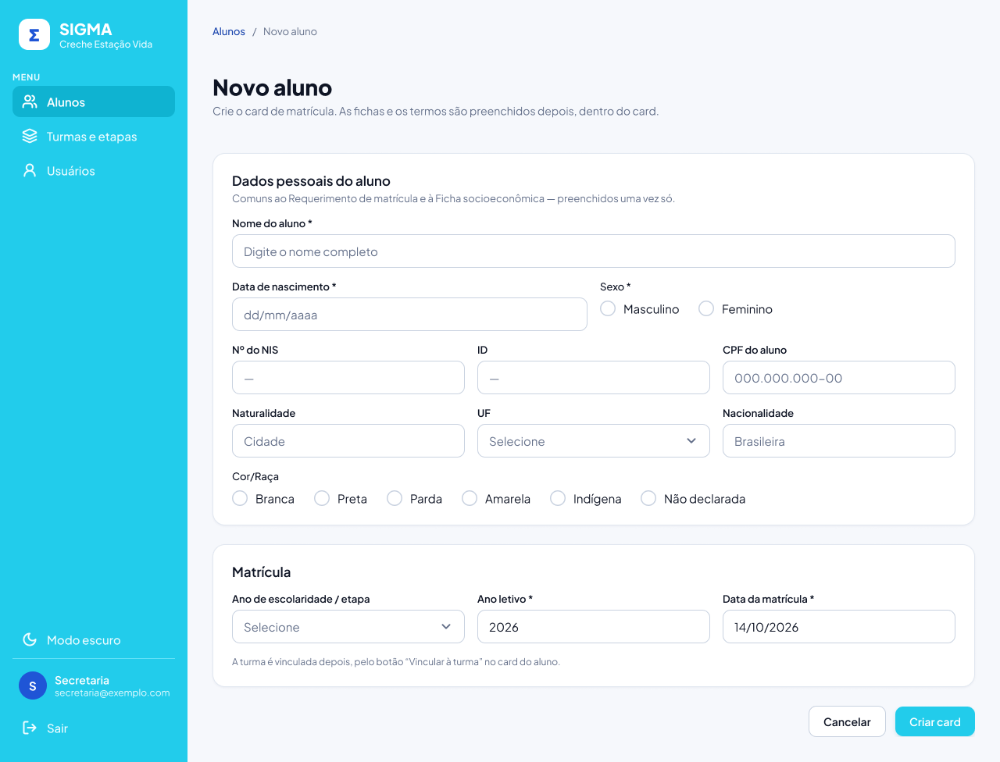
Card do aluno
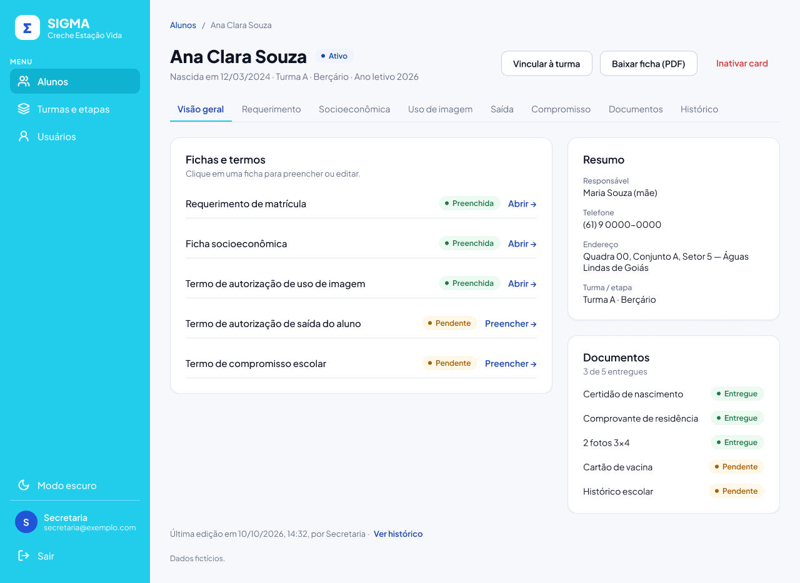
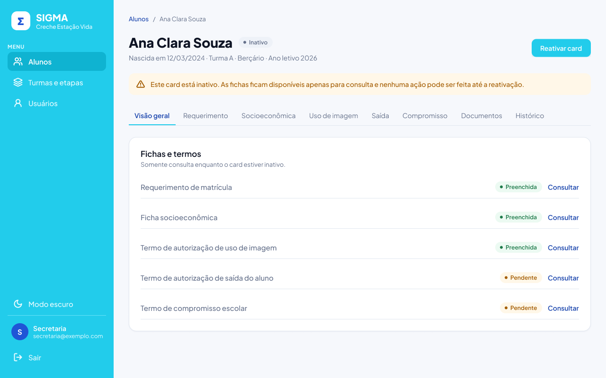
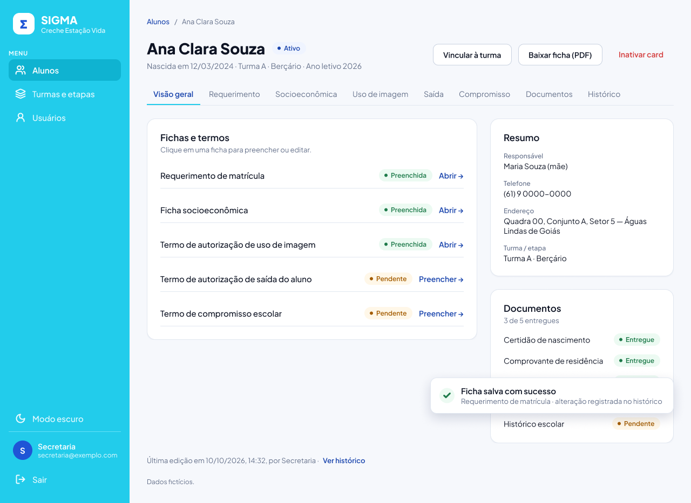
Fichas e termos
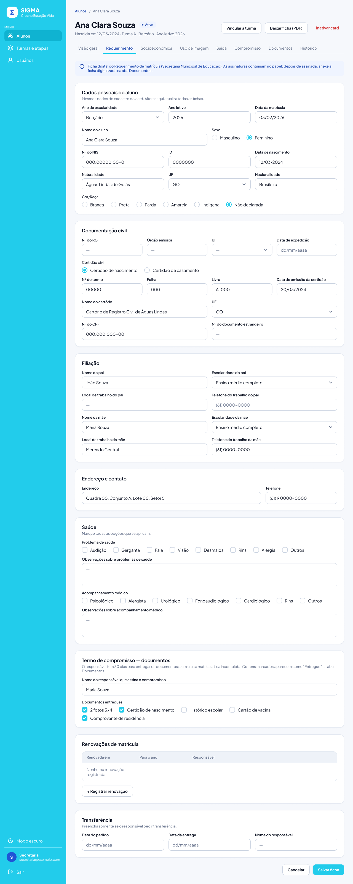
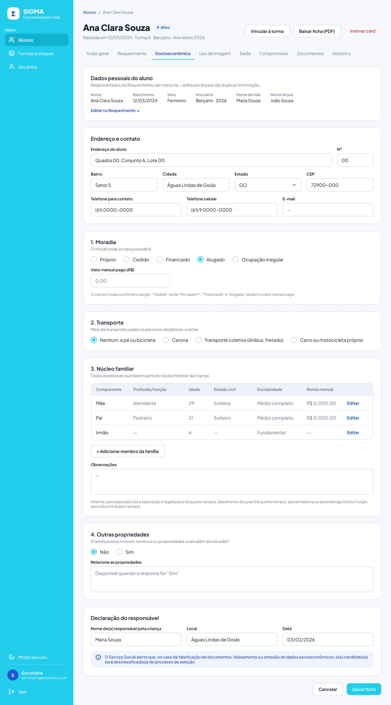
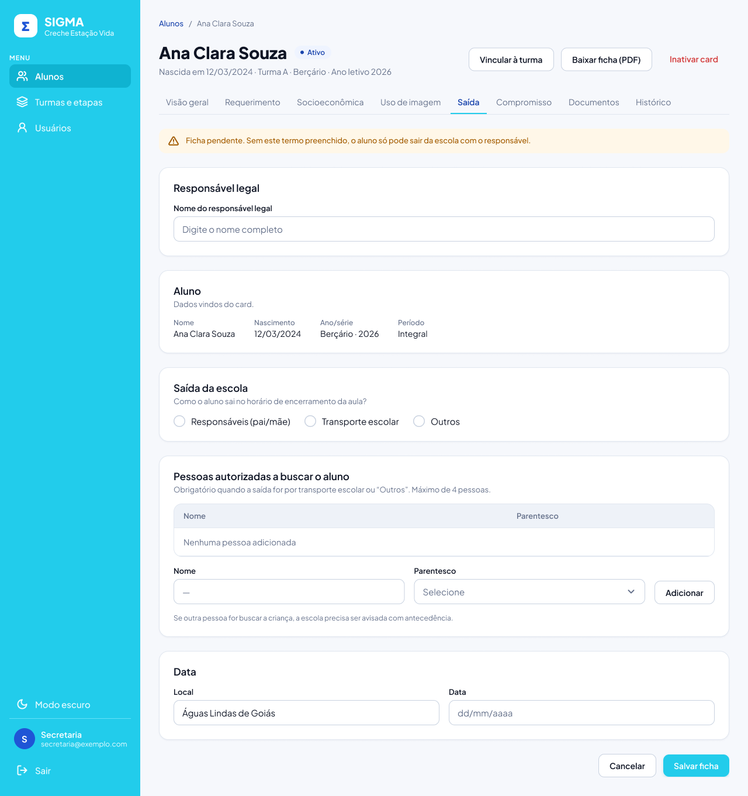
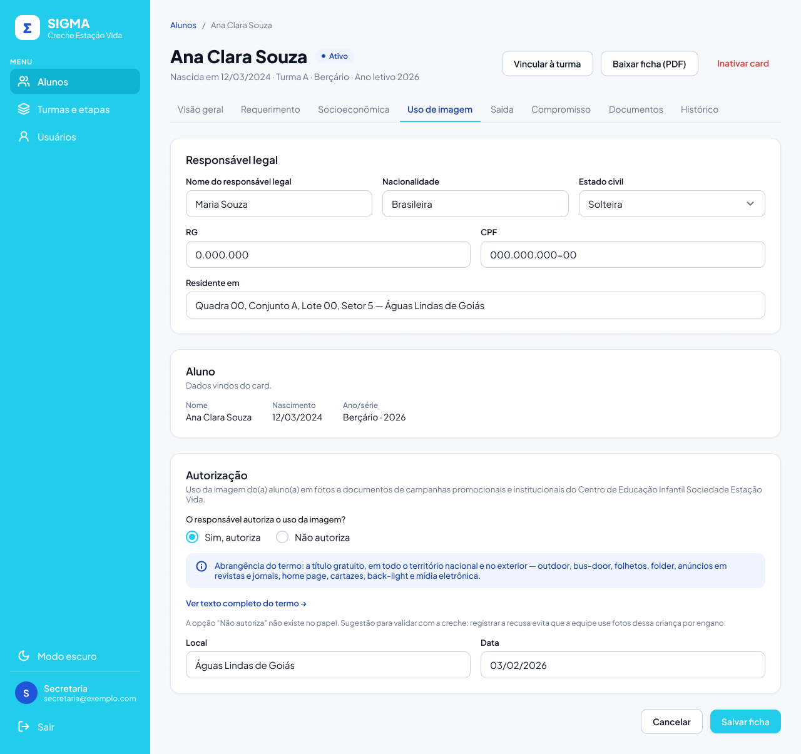
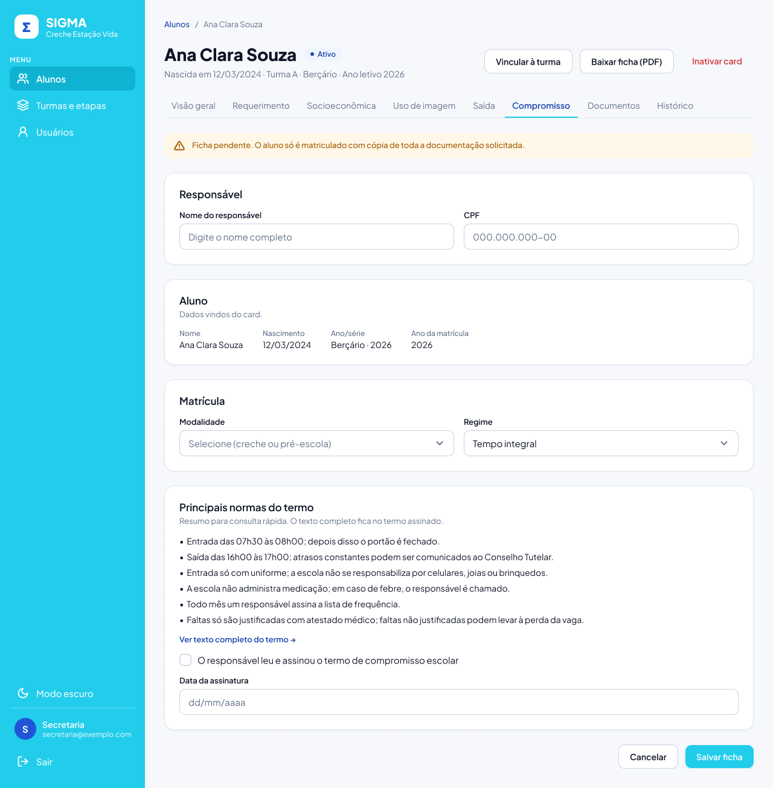
Histórico de edições
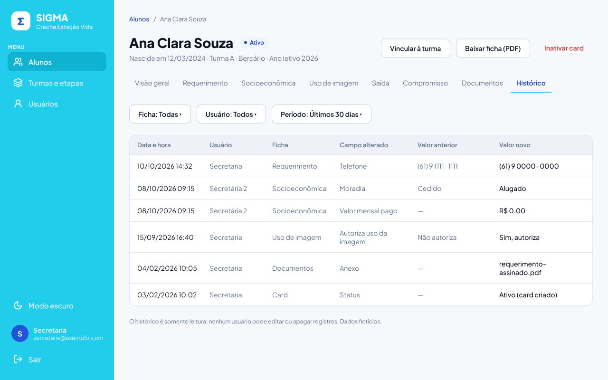
Modais
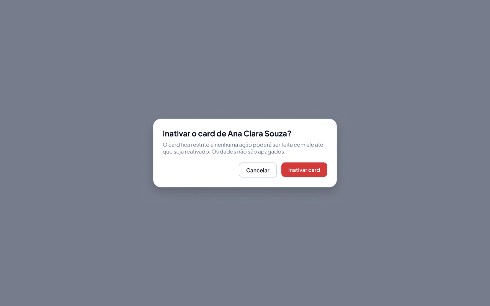
Modo escuro (RNF04)
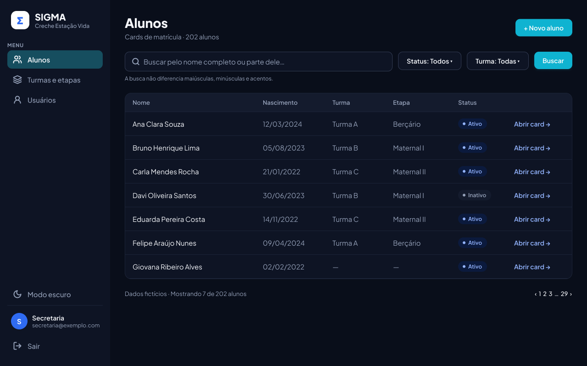
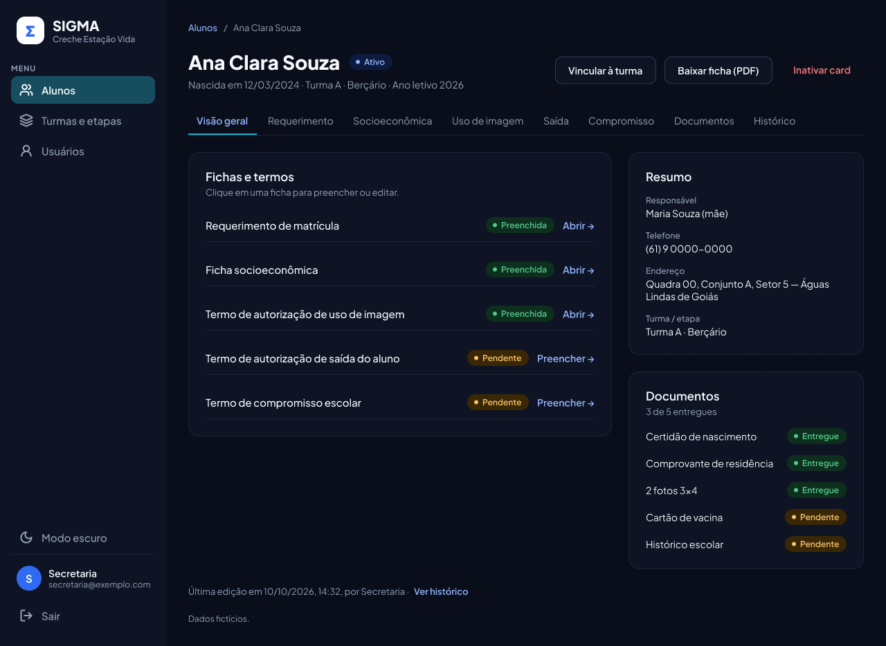
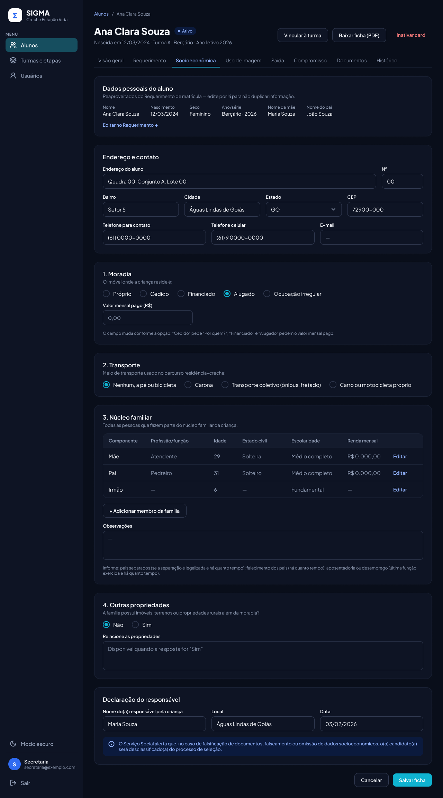
10. Aplicação do DoR
Esta seção registra a avaliação de prontidão deste Caso de Uso, conforme os critérios definidos em Definition of Ready (DoR). O checklist deve ser preenchido para o Caso de Uso ou para o conjunto de fluxos efetivamente selecionado para uma iteração. A presença deste modelo não significa que o Caso de Uso já foi aprovado.
Identificação e delimitação da avaliação
- Caso de Uso: UC04 — Gerenciar Fichas de Matrícula
- Versão do Caso de Uso: 2.0 (consolidada na fase de Elaboração)
- Iteração planejada: Iterações 4 e 5 - Construção (20/10 a 05/11)
- Responsável(is) pela avaliação: Lucas Peixoto e Equipe SIGMA
- Data da avaliação: 19/10/2026 (pré-Iteração 4) e 04/11/2026 (validação dos protótipos e fluxos com as secretárias)
- Representante consultada: Cirlene Sena (diretora/coordenadora) e secretárias da Creche Estação Vida
- Fluxos selecionados para a iteração: FP01 (Cadastrar Card de Aluno e Preencher Fichas), FA01 (Editar Fichas de Matrícula), FA04 (Consultar Histórico de Edições), FA05 (Cancelar), FE01, FE02 e FE04
- Fluxos excluídos desta iteração e justificativa: FA02 (Inativar Matrícula - RF11) e FA03 (Reativar Matrícula - RF12) são Pós-MVP conforme decisão de 06/10/2026 (MVP); FE03 depende de FA02.
- Objetivo(s) específico(s) e característica(s) do produto (OE/CP): OE.1, OE.2, OE.3 / CP1, CP2, CP8
- Requisitos funcionais relacionados: RF08, RF09, RF10, RF11, RF12, RF17, RF23
- Requisitos não funcionais relacionados: RNF01, RNF02, RNF08
- Regras de negócio relacionadas: RN01, RN03, RN06, RN07, RN10, RN15
Checklist de prontidão
Para cada critério, selecionar uma única situação e registrar a evidência correspondente. Utilize Não aplicável somente quando houver justificativa. Utilize Pendente de evidência quando o atendimento ainda não puder ser comprovado.
| ID | Critério de verificação | Situação | Evidência / referência | Observações e pendências |
|---|---|---|---|---|
| DOR01 | O Caso de Uso está formalmente descrito, com atores, objetivo, pré-condições, pós-condições e fluxos principais, alternativos e de exceção aplicáveis claros e sem ambiguidades? | ☑ Atendido | Seções 1 a 6 deste arquivo (uc04.md). |
Fluxos do MVP (FP01, FA01, FA04, FA05) descritos; telas implementadas em PR #43 e PR #71. |
| DOR02 | Os fluxos selecionados para a iteração estão identificados e delimitados, com indicação do que será desenvolvido agora e do que ficará para depois? | ☑ Atendido | Delimitação acima, MVP e Cronograma (Iterações 4 e 5). | FA02 e FA03 explicitamente marcados como Pós-MVP. |
| DOR03 | A rastreabilidade do escopo está demonstrada pela cadeia aplicável entre objetivo específico, característica do produto, RF/RNF e regras de negócio, conforme a Árvore de Rastreabilidade? | ☑ Atendido | Seção 8 deste arquivo e Catálogo Unificado de Requisitos (OE.1, OE.2, OE.3 → CP1, CP2, CP8 → RF08–RF12, RF17, RF23). |
Cadeia completa documentada. |
| DOR04 | As regras de negócio necessárias foram compreendidas, registradas e verificadas quanto a contradições ou decisões essenciais em aberto? | ☑ Atendido | Seção 7 deste arquivo e Catálogo Unificado de Requisitos. | A sequência entre ativação da matrícula (RN03) e vínculo com turma/etapa (RN02, tratado no UC07) deve ser consolidada antes da integração final de alocação. |
| DOR05 | Quando houver impacto na interface, existe protótipo ou wireframe suficientemente detalhado e validado para orientar os fluxos selecionados? | ☑ Atendido | Seção 9 deste arquivo (Figuras 1 a 15 — Figma) e validação com as secretárias em 04/11/2026 (Cronograma). | Telas de cadastro, fichas e modo escuro validadas. |
| DOR06 | As dependências técnicas, riscos, impactos arquiteturais e viabilidade de implementação foram analisados para o escopo selecionado? | ☑ Atendido | Modelagem e tabelas de fichas/histórico (PR #69) e telas de cadastro/termos (PR #71). | Viabilidade confirmada para o recorte do MVP. |
| DOR07 | A representante do projeto validou o entendimento e a adequação do escopo às necessidades e ao contexto de uso da Creche Estação Vida? | ☑ Atendido | Ata de Reunião (06/10/2026) e validação de protótipos em 04/11/2026. | Escopo e formulários validados pela diretora e secretárias. |
Pontos de atenção específicos deste Caso de Uso
- FA02 — Inativar Matrícula e FA03 — Reativar Matrícula estão marcados como Pós-MVP. Não os incluir no escopo da iteração atual sem uma decisão de repriorização registrada.
- Verificar a sequência entre a ativação da matrícula após o preenchimento das fichas (RN03/FP01) e a exigência de vínculo com turma e etapa (RN02, no UC07). A decisão deve ser consistente entre UC04, UC06 e UC07 antes de considerar prontos os fluxos que dependem dessa sequência.
- O FP01 reúne cadastro, preenchimento de várias fichas e salvamento. Delimitar se todos esses passos serão tratados como um único incremento ou se serão divididos em partes verificáveis.
Resultado da avaliação
- Resultado: ☑ Ready (para os fluxos do MVP selecionados:
FP01,FA01,FA04,FA05) - Pendências impeditivas: Nenhuma para o cadastro/edição das fichas (
FP01/FA01). - Pendências não impeditivas: Consolidar entre
UC04eUC07a ordem entre ativação da matrícula (RN03) e alocação obrigatória em turma/etapa (RN02); manterFA02/FA03fora do MVP. - Responsável pelo acompanhamento: Lucas Peixoto
- Data prevista para reavaliação: Antes da integração final de alocação (
UC07) na Iteração 7/8
Atenção: O resultado Ready somente poderá ser marcado quando todos os critérios aplicáveis estiverem atendidos, as evidências estiverem registradas e não houver decisões essenciais ou contradições impeditivas em aberto.
Caso contrário, o resultado deverá permanecer como Not Ready ou Ainda não avaliado.
← Anterior: UC03 - Gerenciar Quadros de Avisos | Próximo: UC05 - Gerenciar Documentos Digitais →